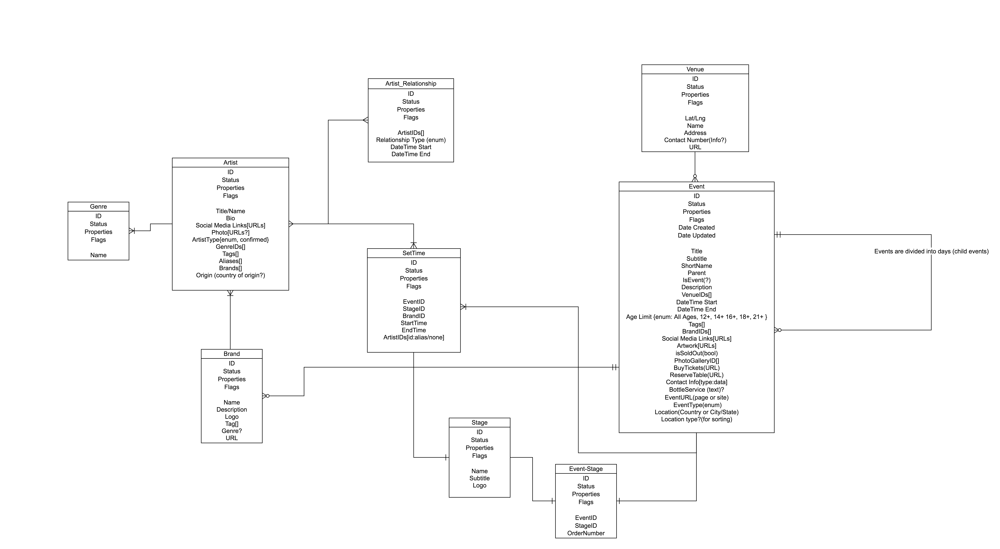

System Diagramming
A system diagram explores the internal logic of a design project - the components that come together as a system, how they are placed and connected, their relationships and emergent properties of that system.
The simplest way to approach a system is from the perspective of Inputs, Processes and Outputs:

Depending on the system you're designing you might need a different kind of a system diagram to help you understand its components and communicate your design vision. Here are some sample diagrams to give you some options:
Diagram 1: Toaster

The diagram focuses on the relationships among the internal components of a toaster, and the inputs and the outputs necessary for its operation. It highlights how all the inputs are processes in order to create a set of outputs. This allows us to account for everything we might need to make a desired result (piece of toast), while also anticipating waste (crumbs and waste heat).
Diagram 2: Car Stereo Wiring

This diagram focuses on the connection among the components of a system, and the kind of signals (in this case different kinds of electrical currents and voltages) flowing among the components. It helps us understand the internal requirements of the system and envision its operation under the ideal conditions.
Diagram 3: Ecosystem

This diagram shows the complex relationships within a given ecosystem. It focuses on how the components of the system (grass, antelopes, cheetahs, poachers) affect each other and themselves through a series of balancing and reinforcing loops, as well as external factors. This diagram is helpful to understand how the components affect each other over time - and to model projections of how the system might behave under changed conditions.
Diagram 4: Interactive Space

This diagram (part of a patent application for an immersive gaming system) shows how all of the components of the system fit in space, how they relate to the scale of a human body as well as communicate the intended use. The most useful aspect of this diagram is that is helps us understand how the system would be used "in situ".
Diagramming examples
Facebook Awards Judging System
A system of data structures underlying a judging system for the 2017 Facebook Awards. The system includes submisstions and the related data objects and the judging process with judges, rounds of judging and the tracking of the results.
Insomniac Artist/Event Database
A data system for Insomniac Artist Database. The system accounts for the complex and changing relationships artists can have with each other and provides for the nested structure of the events that artists take part in.
News Feed API design

The diagram outlines the details of the process of fetching and displaying a News Feed from a proprietary API.
Facebook Reesearch Website

The diagram outlines the information architecture for the FaceBook Research website.